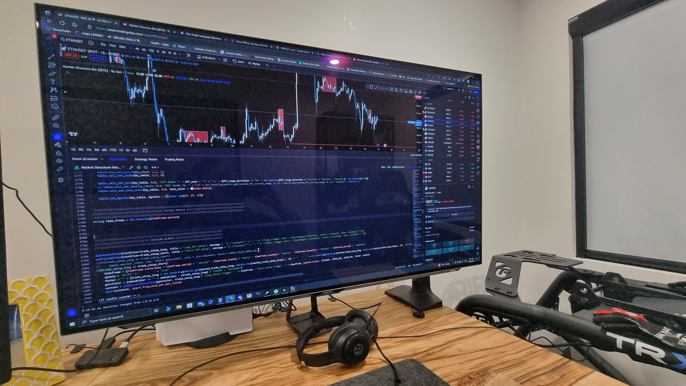

About Me
Family
Becoming a father to my beautiful daughter Vera was a life-changing moment that redefined my priorities and aspirations. I realized the responsibility of shaping her future and providing for her.
This newfound role ignited a desire to take action within the career portion of my life. I thought what better time then now to pursue my career goals, while my family is still young and I saw programming as the gateway to that journey. The dynamic world of web development and software engineering offered the potential to create innovative solutions, open doors to new opportunities, and ensure a stable foundation for my daughter's future.
My daughter's arrival became the drive that fueled my desire for change.
Programming
I have a fascinating hobby that bridges the gap between technology and finance. I'm an avid enthusiast of algorithmic trading and have a particular fondness for developing trading bots using Pine Script, which is TradingView's proprietary coding language.
Pine Script empowers me to design custom trading indicators and strategies within the TradingView platform. It's a versatile and powerful language tailored to traders and investors. I find immense satisfaction in crafting code that can analyze price data, trigger buy or sell signals, and automate trading decisions.
This hobby combines my passion for coding with a keen interest in financial markets. It's a thrilling endeavor to create and fine-tune trading algorithms, watching them come to life and execute trades automatically based on predefined conditions. Pine Script allows me to backtest strategies and gain insights into their historical performance, a valuable tool for improving trading outcomes.
While my primary focus remains in web development, I believe that the problem-solving skills and attention to detail honed in algorithmic trading complement my work in the digital realm. If you share an interest in algorithmic trading, Pine Script, or simply want to discuss the fascinating world of financial technology, don't hesitate to reach out. Let's exchange trading strategies and insights!
Sim Racing

When I'm not immersed in the world of web development, you can often find me indulging in another thrilling passion – sim racing. The roar of engines, the rush of competition, and the precision of every corner make this hobby an exhilarating escape.
Sim racing allows me to combine my love for technology and my need for speed. I've built a dedicated racing rig, complete with a steering wheel, pedals, shifter, vr headset and a 4k oled monitor. Whether I'm tearing up virtual tracks in a Formula 1 car or battling it out in a GT sports car, the immersive experience is as close to real racing as it gets.
Sim racing is more than just a pastime; it's a testament to the fusion of technology and passion. It's a hobby that demands precision, strategy, and a deep understanding of racing dynamics.
If you're a fellow sim racing enthusiast or want to discuss anything related to this high-speed hobby, feel free to connect. Let's trade lap times and racing stories!